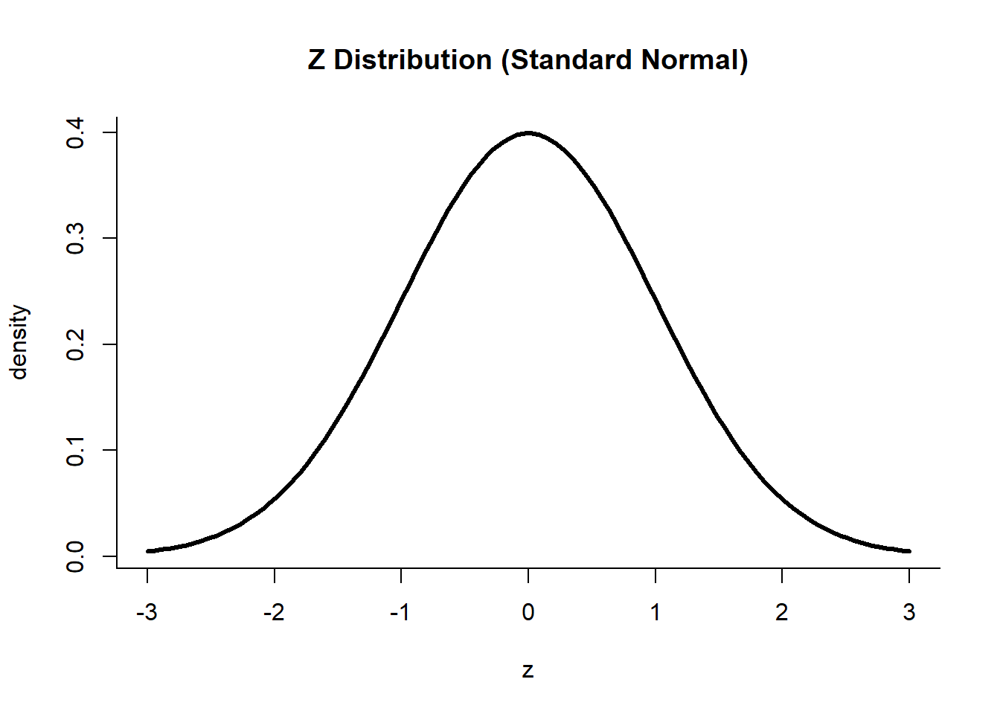

Unit 5 Z-tests, t-tests, and Confidence Intervals
5.1 Starting with Z
The standard normal distribution, as discussed in Unit 3, is also called the Z Distribution because the process of standardization yields a random variable commonly called \(Z\).

5.2 Doing a Z-test
Now that we have been introduced to the Z Distribution and the hypothesis testing framework, we are now ready to answer questions like, “Is there evidence to conclude that the mean of a population is equal to a certain number?”
5.2.1 Using the Z Statistic
Suppose a pasta company claims that the net weight of one pack of pasta is 100 g, with a standard deviation of 0.5 g. You are hired by this company to do statistical analysis for them, specifically to test whether the 1 million packs of pasta produced this week meet their 100-gram claim. You cannot weigh all the 1 million packs individually because reopening them would cost the company money, and it would obviously take you a very long time to weigh each pack. The manager of the manufacturing division gives you 500 packs of pasta to work with and hopes that with your statistical knowledge, you will be able to prove or dispute their claim. What should you do?
The problem above can be solved using a simple hypothesis setup:
\[ \begin{aligned} H_0 &: \mu = \mu_0 \\ H_1 &: \mu \neq \mu_0 \end{aligned} \]
where \(\mu\) is the true mean of the population, and \(\mu_0\) is the reference mean. In the problem, the reference mean is 100 g, since that is what the company claims. The population, whose true mean is \(\mu\), is the batch of 1 million packs produced during the week. Using statistical jargon, we would like to test whether the population mean is indeed 100 g using the sample of 500 pasta packs. Recall that the sample mean, \(\overline{X}\), is an estimate of \(\mu\). Hence, taking the mean of the 500 packs of pasta would give an estimate of the true mean weight of the batch produced. \(\overline{X}\) is simply the arithmetic average of the weights of the 500 packs, i.e., \(\overline{X} = \sum_i^{n}\frac{x_i}{n}\). To test this hypothesis, we can take the difference between \(\overline{X}\) and \(\mu_0\) and check if it is large enough to say that the population mean \(\mu\) is not 100 g. Note that the direction of the difference (i.e. whether it is positive or negative) does not matter as implied by the hypotheses. Thus, from Unit 4, we can reject the null hypothesis when:
\[|\overline{X} - \mu_0| \geq c\]
where \(c\) is the critical value. At this point, one might be tempted to choose an arbitrary value for \(c\), say 10 or 15. That would undermine the integrity of the procedure performed. Recall from the previous discussion that the appropriate \(c\) is determined by first setting an \(\alpha\).
For this problem, assume that the company would like to be 95% sure that the batch produced meets their 100-gram claim. Given this 95% confidence level, \(\alpha\) would have a value of 0.05 since we can only allow incorrect rejection of \(H_0\) 5% of the time. This is a two-tailed test and hence, the critical value to be used should correspond to \(\alpha/2\).
What is the appropriate critical value to use? We have 500 samples, a sufficiently large number, and it would be safe to say that the samples are independent. Since the assumptions are met, we can use the Central Limit Theorem and assume that \(\overline{X}\) is normally distributed. All that needs to be done is standardize \(\overline{X}\) to get the corresponding Z statistic and compare that with the critical Z-score.
To standardize, the formula for the Z-score from Unit 3 is used. Note that this time, the variable to be standardized is \(\overline{X}\), not \(X\), and hence the appropriate mean and standard deviation must be used. From Unit 3, we know that \(\overline{X} \sim N(\mu, SE = \sigma/\sqrt{n})\) and so:
\[ \begin{align} Z &= \frac{\overline{X} - \mu}{SE} \\ &= \frac{\overline{X} - \mu}{\sigma/\sqrt{n}} \\ &= \frac{\sqrt{n} \cdot \big(\overline{X} - \mu\big)}{\sigma} \end{align} \]
To find the critical Z-score corresponding to \(\alpha/2\), one would need to look at the cumulative distribution function or CDF of the Z distribution. Formally, the critical Z-score is computed as
\[c = \Phi^{-1}(1-\alpha_0/2) \cdot \frac{\sigma}{\sqrt{n}}\]
where \(\Phi\) is the CDF of the standard normal distribution. Thankfully, because the standard normal distribution is commonly used, Z tables and computers have made this much easier. For the pasta problem, the Z-score for a two-tailed test corresponding to \(\alpha = 0.05\) is 1.96. Therefore, we reject the null hypothesis if the calculated Z statistic which is denoted as \(Z\), is \(< -1.96\) or \(> 1.96\), which corresponds to the shaded regions below:
5.2.2 p-values
P-values can also be used to decide whether or not the null hypothesis should be rejected. This can be done by using the standard normal distribution to get the cumulative probability, \(\Phi(Z)\), which corresponds to the \(Z\) statistic we have computed from \(\overline{X}\). We reject the null hypothesis if \(\alpha \leq 1-\Phi(Z)\).
5.3 Confidence Intervals
5.3.1 What are confidence intervals?
Confidence intervals give us a range of plausible values for the population parameter based on results from a sample. The conditions for the CLT must also be met for the confidence interval to be valid.
5.3.2 Constructing a Confidence Interval
The confidence interval for the mean is computed as:
\[(\overline{x} - z^* \frac{s}{\sqrt{n}}, ~ \overline{x} + z^* \frac{s}{\sqrt{n}})\]
- \(\overline{x}\) is the sample mean
- \(s\) is the sample mean
- \(n\) is the sample size
- \(z^*\) is the critical z-score